Portfolio
Explore my hardware designs, embedded solutions, and high‑performance projects.
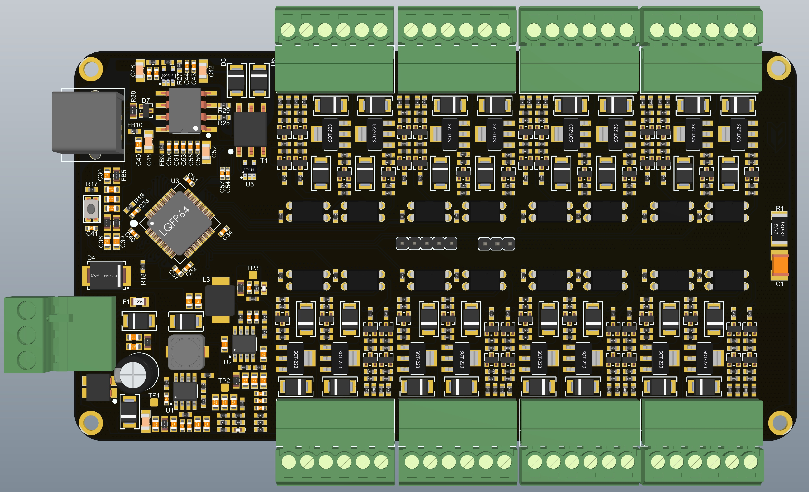
Isolated High-Voltage Relay Driver & Monitoring Module
Relay Board
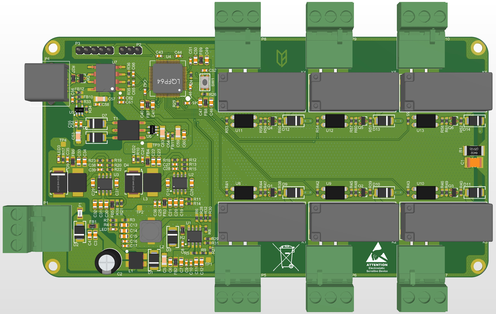
Industrial Isolated Relay Control Module
Relay Board
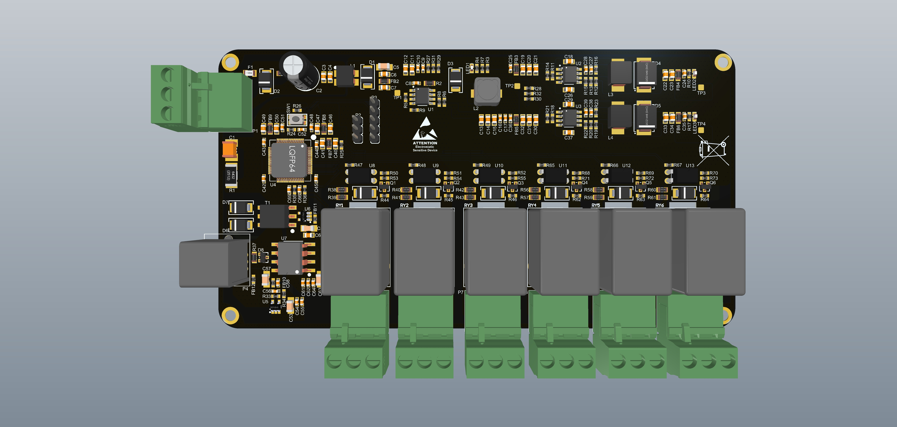
RuggedRide 4x4
Integrated Vehicle Control System
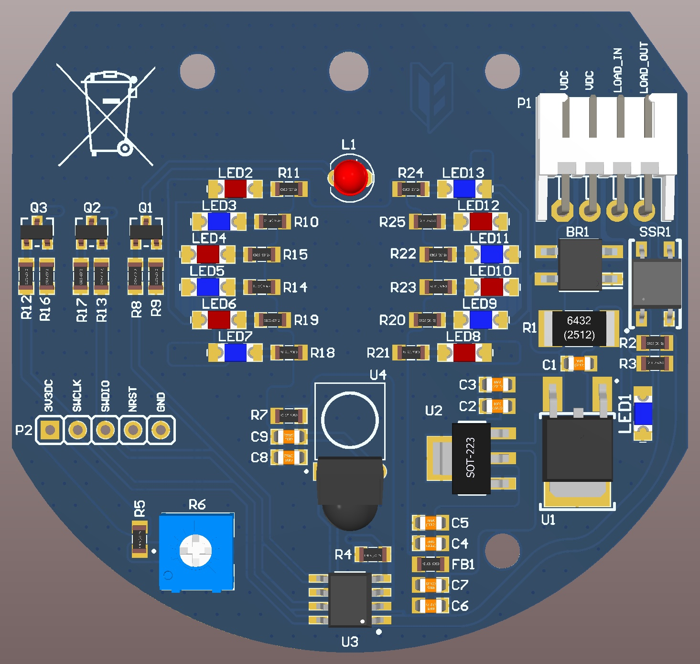
Industrial Power-Control Relay Module
Relay Board
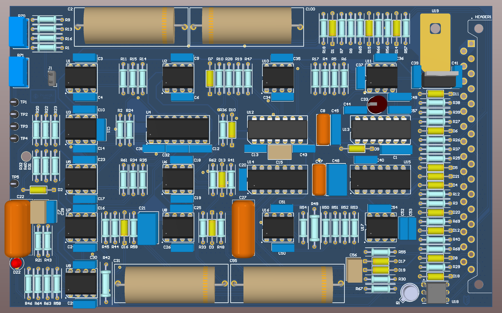
Motor Winding Control Board
Reverse Engineering Projects
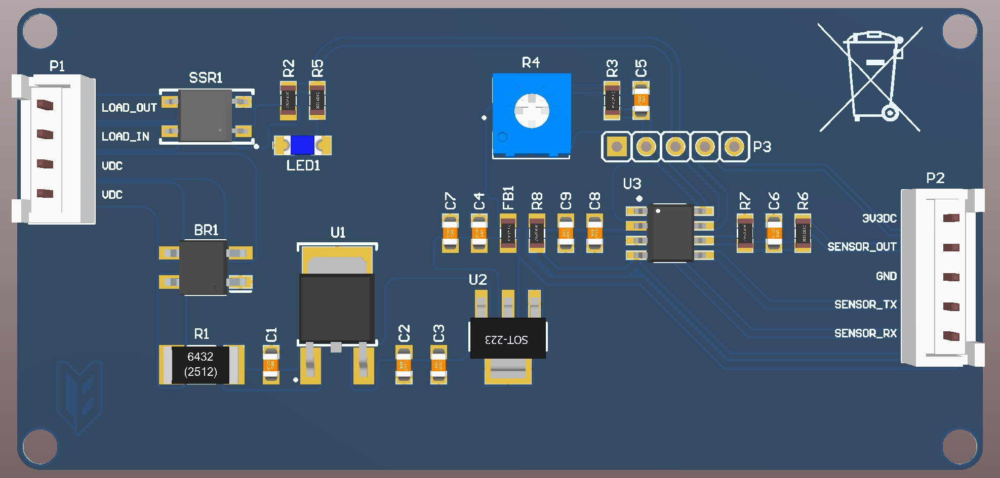
Digital Radar–Based Automatic Door Sensor System
Sensor System
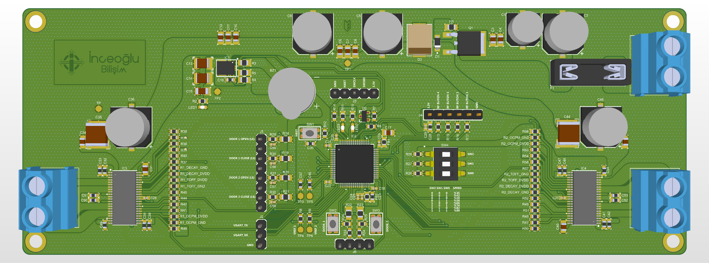
Vehicle Door Anti-Pinch Control Board
Automotive Motor Control System
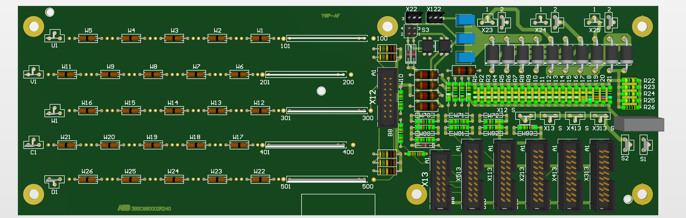
ABB SDCS-PIN-51 Measurement Card
Reverse Engineering Projects
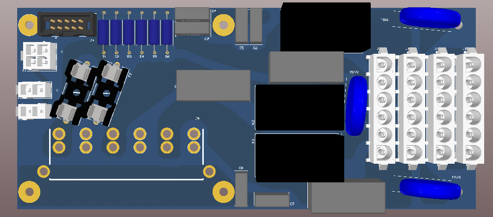
AC Relay Distribution Board
Reverse Engineering Projects

IR-GuardX
Display Interface System
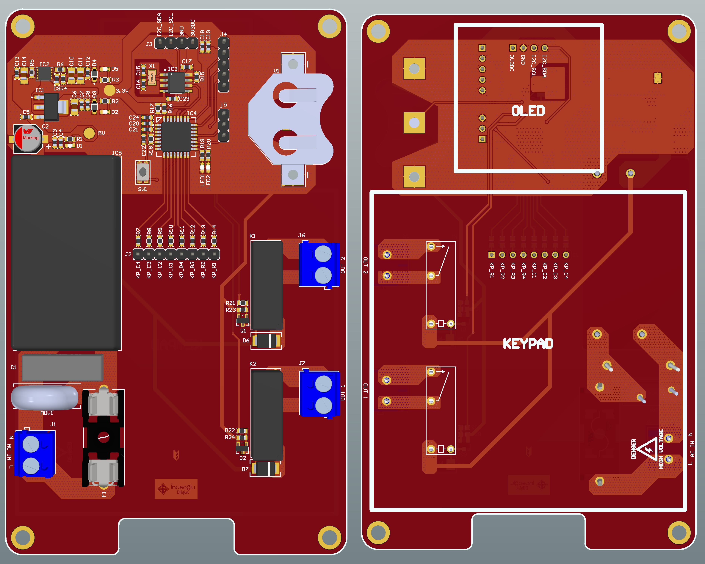
TMR-200 Industrial Bell Timer Controller
Industrial Timer Controller
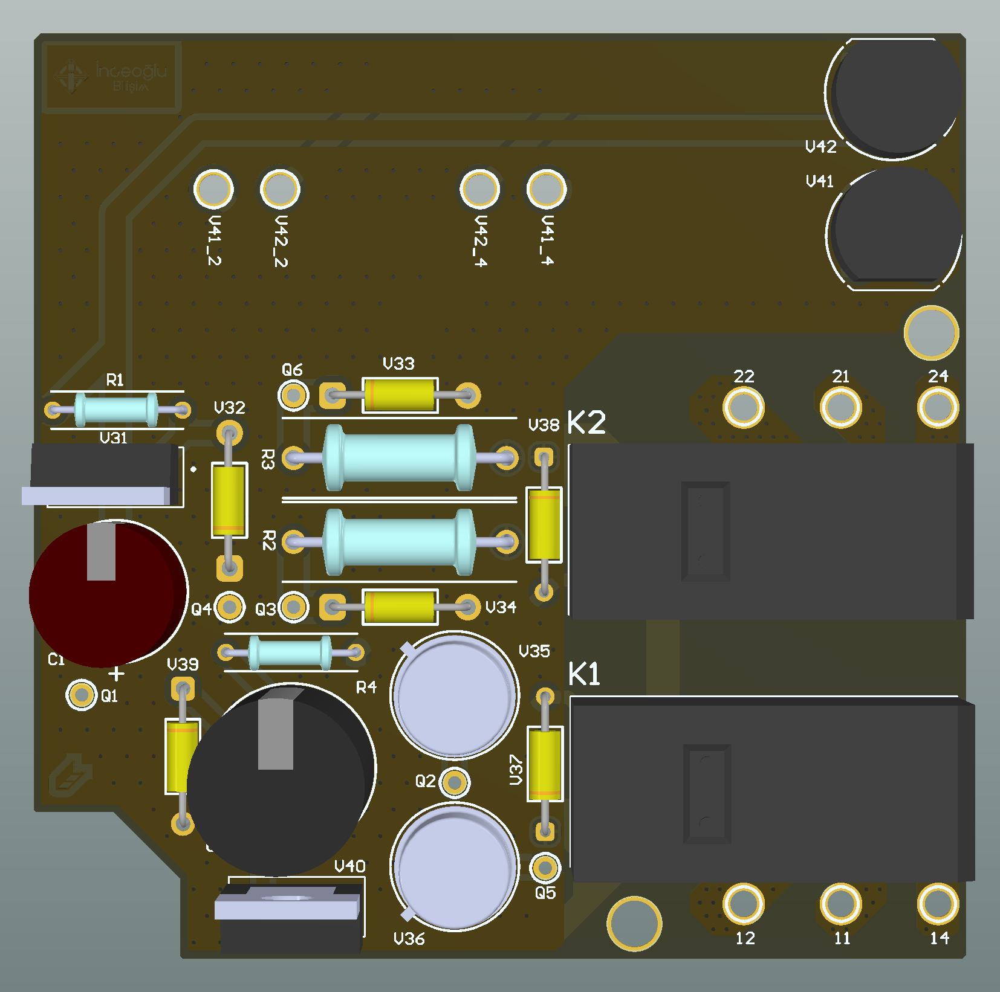
Dual-Channel Relay Driver Board
Reverse Engineering & Redesign